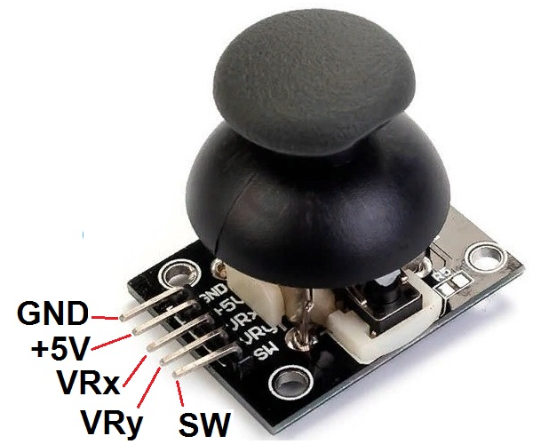
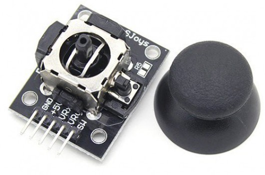
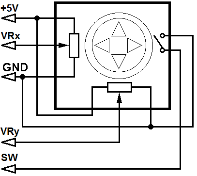
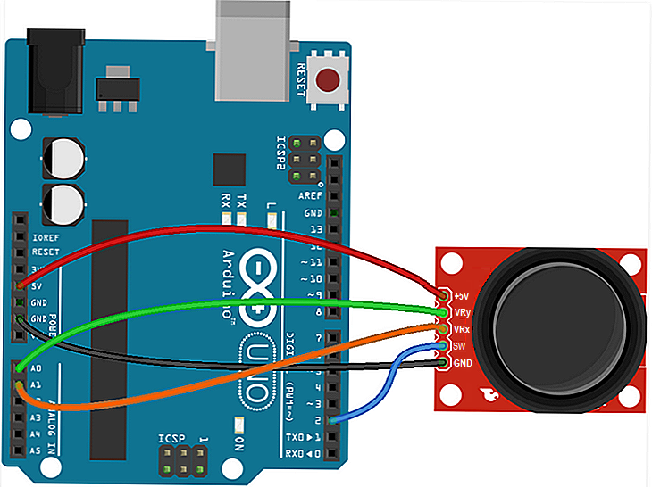
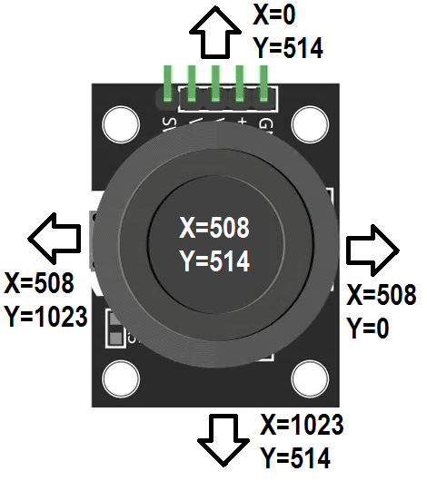

Подключение джойстика к Arduino
Джойстики используются для управления движением роботов, мобильных платформ и прочих механизмов. Модуль двухосевого джойстика (рис. 1) имеет две степени свободы, представляет собой ручку, закреплённую на шаровом шарнире с двумя взаимно перпендикулярными осями (рис. 1).
{kind=link}

{kind=link}

На модуле 5 выводов: +5V, GND, VRx, VRy, SW.
Внимание! Обозначения на разных модулях могут отличаться.
При наклоне ручки вращаются подвижные контакты каждого из двух переменных резисторов сопротивлением 10 кОм, которые определяют положение осей X и Y. Средний контакт каждого переменного резистора выведен на контакты VRX и VRY модуля, а крайние подключены к питанию и земле (рис. 2). Также джойстик оснащен тактовой кнопкой, которая срабатывает при вертикальном нажатии на ручку, показания снимаются с контакта SW. После отпускания джойстик возвращается в первоначальное центральное состояние.

Основные технические характеристики джойстика:
- Напряжение питания: номинальное 3,0…5,5 В;
- Выходной сигнал: цифровой (кнопка) и аналоговый (оси X и Y);
- Размеры: 26 мм×40 мм×22 мм.
Для подключения модуля джойстика к плате Arduino используются два аналоговых и один цифровой вывод Arduino, а также с платы Arduino можно подать питание на контакты джойстика GND и +5V. Схема подключения показана на рис. 3 и табл. 1.

Таблица 1
| Arduino | Джойстик |
|---|---|
| +5V | +5V |
| GND | GND |
| A1 | VRx |
| A0 | VRy |
| 2 | SW |
Данные с выводов VRx и VRy могут принимать значения от 0 до 1023. Неподвижному положению джойстика соответствуют значение 511 для каждого вывода. Точное текущее значение неподвижного положения невозможно получить. Поэтому центром будет считаться диапазон значений примерно от 506 до 515. Этот диапазон надо подстроить под джойстик.
На рис. 4 показаны изменения значений сигналов с выводов VRx (X) и VRy (Y) при перемещении ручки джойстика в различных направлениях (рис. 4).

При нажатии на кнопку на входе Arduino будет появляться 0. Чтобы не было наводок, вывод кнопки необходимо подтянуть к +5 В с помощью резистора сопртивлением 100 кОм или использовать внутренние подтягивающие резисторы.
Скетч 1
int XPIN=A1; //пин подключения контакта VRX int YPIN=A0; //пин подключения контакта VRY int Btn_PIN=2; //пин подключения кнопки int x, y, sw; void setup () { Serial.begin(9600);// запуск последовательного порта // Настраиваем Btn_PIN на ввод с включением внутреннего подтягивающего резистора pinMode(Btn_PIN, INPUT_PULLUP); } void loop () { x=analogRead(XPIN); y=analogRead(YPIN); // Выводим значение по оси X Serial.print("X = "); Serial.print(x); // Выводим значение по оси Y Serial.print(" Y = "); Serial.println(y); // Состояние кнопки sw=digitalRead(Btn_PIN); Serial.print("button = "); if (sw == HIGH) { Serial.println("NOT CLICK"); } else { Serial.println("CLICK!"); } delay(1000);// Пауза 1 сек }
Источники
electroschematics.com - Arduino Joystick Experiment – Tutorial #10
digitrode.ru - Подключаем джойстик к Arduino
arduino-diy.com - Arduino и джойстик